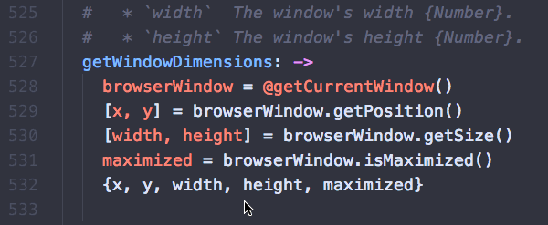
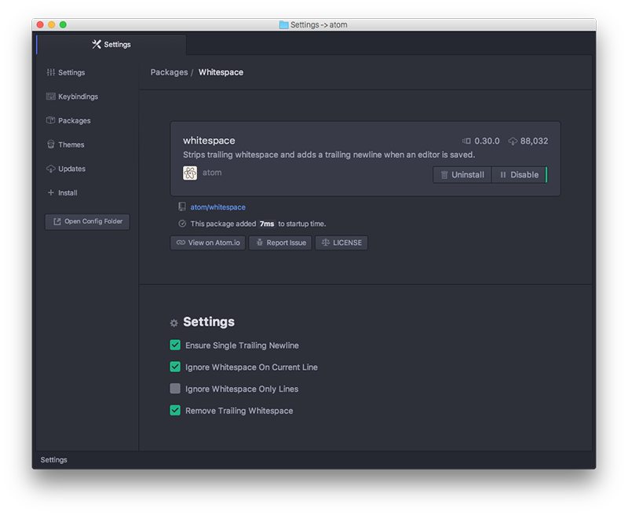
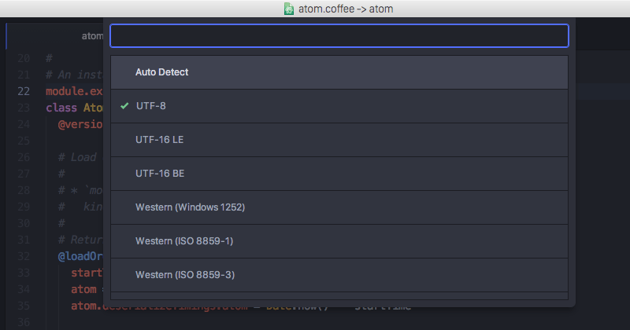

编辑和删除文本
至此我们已经学习了很多在文件中移动和选择区域的方法，那么让我们来实际修改一些文本吧！虽然你可以通过打字来插入字符，但是还有很多用于删除和处理文本的方法你可能会用得上。
基本操作
有一些简便易用的很酷的快捷键可以用来进行基本文本操作，它们可以在文本行之间移动，复制文本行，还可以改变字母大小写。
ctrl-T：字符变换。交换光标两侧的字符
cmd-J：将下一行拼接到当前行的末尾
ctrl-cmd-up，ctrl-cmd-down：上移或下移当前行
cmd-shift-D：复制当前行
cmd-K，cmd-U：将当前单词转换为大写字母
cmd-K，cmd-L：将当前单词转为小写字母
Atom 还内置了一个对段落进行重新排版的功能，当一行的长度超出了最大硬换行（ hard-wrap ）长度时，你可以使用 cmd-alt-Q 来对当前选中区域进行排版，使其每一行的长度不超过 80 个字符（你可以在 editor.preferredLineLength 中修改这个默认值）。如果没有选中任何文本，则当前的段落会被重排。
删除和剪切
你也可以用一些快捷键从缓冲区中删除和剪切文本。不要手下留情。
ctrl-shift-K：删除当前行
cmd-delete：删除从当前位置到本行末尾的内容（在 MAC 中为 cmd-fn-backspace ）
ctrl-K：剪切从当前位置到本行末尾的内容
cmd-backspace：删除从当前位置到本行开头的内容
alt-backspace，alt-H：删除从当前位置到单词开头的内容
alt-delete，alt-D：删除从当前位置到单词末尾的内容
多光标选择
Atom 能做到一件很酷的事，就是多光标支持。这在处理一列很长的文本时会特别好用。
cmd-click：添加新的光标
cmd-shift-L：将多行选择转换为多光标
ctrl-shift-up，ctrl-shift-down：在当前光标上方或者下方加入一个新光标
cmd-D：选择文档中与当前选中单词相同的下一个单词
ctrl-cmd-G：选择文档中与当前选中单词相同的所有单词
用这些命令你可以在你的文档的多个位置放置光标，并且高效地一次性在多个位置执行相同命令。

图 1. 使用多光标
这种方法在诸如重命名变量或者修改文本格式这类重复任务的时候很有帮助。你可以借助几乎任何插件或命令来使用它——比如转换字母大小写，以及移动或复制文本行。
你也可以在按下 Command 键的同时使用鼠标一次性选中你的文本中的多个区域。
空白字符
Atom 自带了一些命令来帮助你管理你的文档中的空白字符。一对非常有用的命令是把前导空格转换为制表符（Tab），以及把前导制表符转换为空格。如果你的文档中混用了多种空白字符，这些命令会对文档的标准化有巨大帮助。空白字符命令没有快捷键，所以你只能在命令面板中寻找“ Convert Spaces to Tabs （将空格转换为制表符）”（或者相反），并且选取一个命令来执行。
空白字符命令在 atom/whitespace 包中实现。空白字符命令的设置，在 whitespace 包的页面中提供。

图 2. 管理你的空白字符设置
要注意的是“ Remove Trailing Whitespace （移除末尾空白字符）”选项是默认开启的。这意味着每当你在 Atom 中保存文件时， Atom 都会去掉文件末尾的空白字符。如果你想禁用这个选项，在你的设置面板中打开 whitespace 包的页面，取消勾选该选项。
Atom 同时也默认确保你的文件的末尾有个空行，你也可以在上述位置禁用它。
括号
Atom 自带对括号操作的智能简便的处理方式。
当你的光标覆盖 [] ， () 和 {} 时， Atom 会默认高亮它们。匹配的 XML 和 HTML 标签也会高亮显示。
Atom 也会自动完成 [] ， () ， {} ， "" ， '' ， “” ， ‘’ ， «» ， ‹› 和反引号。如果你在选择了一段文本的情况下输入一个左括号，Atom 会自动补上一个右括号来把这段文本包裹起来。
下面是另外一些有趣的括号相关命令，你可以使用它们。
ctrl-m：跳转到光标临近的括号所匹配的括号。如果没有匹配的，就跳到最近的后括号。
ctrl-cmd-m：选择当前括号中所有文本
alt-cmd-.：闭合当前 XML/HTML 标签
括号功能在 atom/bracket-matcher 包中实现。和所有这些包一样，想要修改括号操作相关的默认行为，或者直接禁用它，你可以浏览设置视图中这个包的页面。
文件编码
如果你发现你正在处理非 UTF-8 编码的文件时，或者你打算创建这样的文件，你会发现 Atom 还自带一些基本的文件编码支持。
ctrl-shift-U：激活文件编码菜单
如果你打开文件编码菜单，你可以选择一种编码来保存你的文件。
当你打开一个文件，Atom 将会自动检测文件编码。如果 Atom 无法识别，文件编码将会默认设置为 UTF-8 ，之后新建的文件也将应用此默认值。

图 3. 修改文件编码
如果你打开编码菜单并将当前文件的编码修改为其他编码，当你下次保存该文件的时候，该文件将以此编码来输出。
编码选择器在 atom/encoding-selector 包中实现。